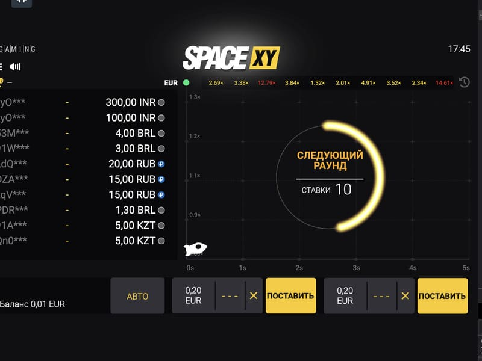
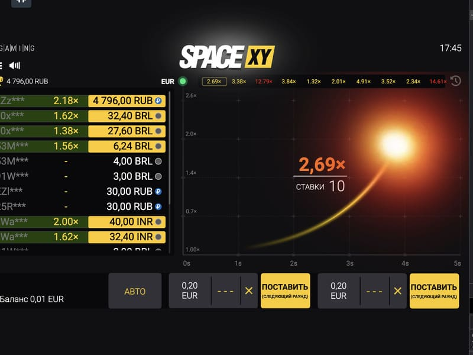

Space XY slot machine in an online casino
To take your mind off the classic slot machines, just launch the Space XY slot. The global provider BGaming has released an original multiplayer game with minimal options. But the process is guaranteed to be exciting and intriguing. The Space XY game is designed specifically for supporters of cryptocurrency rounds, respectively, providing a transparent and fair rest. Players only need to follow the rocket, and press output promptly until it flies away. Luck and the right reaction will ensure big wins at high multipliers in the Space XY game.
Reasons for popularity of Space XY

The Space XY game can rightly be called a hit of top casinos. Such popularity is directly related to the benefits:
The playing field is divided into several zones - settings, playing field, and control panel. Also, players have the opportunity to observe statistical data and make settings for organizing a comfortable gameplay.
A huge range of values allows you to vary the chances of winning, play the minimum or take risks to hit the big jackpot.
Each round lasts a different period, which brings some zest. In pursuit of the coveted prize, players get another dose of adrenaline, entertainment becomes unrealistically exciting and profitable.
The player decides when to stop the round and withdraw the odds. In parallel, you can apply different strategies, play at the same rate or change values, depending on the favour of Fortune.
The implemented Provably Fair system allows you to check the transparency of each round. The program generates the result randomly, including the actions of the first players who place bets in the calculation. The game is similar to Aviator, and Lucky Jet, so their fans and online casino guests will certainly like it. It is possible to plunge headlong into the space theme, having at hand any device with access to the Internet.
How to play and win at Space XY
While playing Space XY, everyone's task is to listen to their intuition and choose a winning strategy. A field with the image of the coordinate axis will open before the players. A rocket will fly out from point 0 and rapidly gain altitude. With the latter, the multiplier that the player displays to increase the bet by this value also grows. Everyone needs to read the rules first.
Bets in the Space XY online game are accepted from 0.1 to 1000 coins per round, which is ideal for beginners and high rollers. To increase the chances of winning, two bets are available to players. It is also possible to launch auto spins. Changing values is real only at the time of the countdown.
The player can withdraw the winnings at any time. But if the rocket explodes, the stake also burns out. Before the start of the flight, it is possible to cancel the bet using the Cancel button. Winnings are withdrawn when you click Claim. On the left, you can view your options, and follow the history of the gameplay to analyze for future victories.
Strategies and tactics in Space XY

The winnings in the crash game Space XY directly depend on the size of the bets. By developing your tactics, it is possible to use auto-rounds and several types of betting. According to feedback from experienced players, the game has well-known iGaming industry strategies, namely:
The randomness of each round confirms that there is no single winning strategy. Players should approach the rest individually, taking into account their desires, and the allocated budget. When choosing a certain tactic, you should strictly adhere to it, always managing your bankroll. In case of temporary bad luck, it is better to stop the game session to restart the game after rest.
The essence of Space XY game

The Space XY online game allows you to take a break from the usual format of slots and get winnings. Despite the minimalist format, the rounds are constantly kept in suspense, and when tactics change, the interest increases even more. Here there is a place for varying the winnings and the size of the potential prize balance. It is not in vain that the space novelty occupies the top position in the world's online casinos.
Where to play Space XY

For Space XY players, we have great news - we have compiled a list of the best online casinos where you can play Space XY. Play only in trusted casinos, where you can be sure that you will be able to withdraw your winnings, and the casino management will not interfere with the gaming process. We have compiled a list of honest casinos where you can register and start playing Space XY.